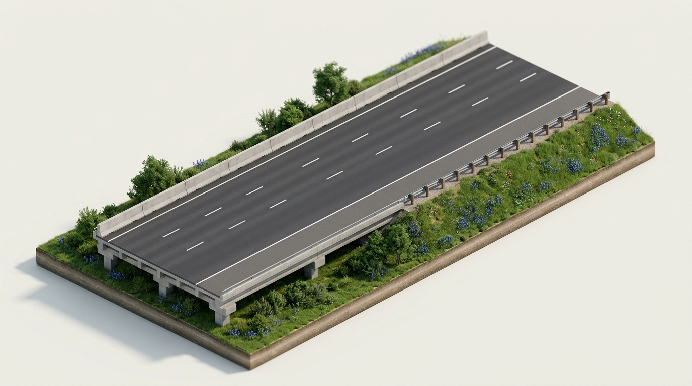

Managing Risk & Decreasing High-Risk Driving Behaviors
Over 90% of motor vehicle collisions on Texas roadways result directly from human driver error—speeding, distraction, following too closely, and impaired judgment. Adopting a systematic, reduced-risk driving philosophy transforms dangerous chance into predictable collision avoidance.

Safety experts reject the word "accident" because collisions are neither unpredictable nor unavoidable. Drivers who maintain a 3-to-4 second following interval and continuous 360-degree situational awareness eliminate over 90% of crash opportunities.



The SIPDE process is a defensive driving framework: Search the road 12–15 seconds ahead; Identify clues, hazards, and other roadway users; Predict how hazards may develop; Decide the safest course of action (adjusting speed, lane position, or communication); and Execute your decision smoothly and decisively.
Reduced-Risk Operational Network
Swipe horizontally to inspect the four foundational pillars that protect motorists against human error hazards.
Defensive Space Management Pipeline
Master the 3 stages to continuously protect your vehicle's perimeter from crash hazards.
Search Ahead
Scan 12-15 seconds ahead for slowdowns, hazards, and brake lights.
Hold 3-4s
Establish space cushion and avoid driving in blind spots of others.
Open Path
Always preserve an open shoulder or adjacent lane escape route.
According to Texas traffic safety data, what percentage of motor vehicle crashes are caused by human driver error?
Select the single correct answer under TDLR ADE Chapter 8 standards:
According to TxDOT and national safety crash records, human behavioral choices—speeding, distraction, following too closely, and impairment—cause over 90% of crashes. Establishing a 3-to-4 second following interval and maintaining an open escape route prevents virtually all multi-vehicle pileups.